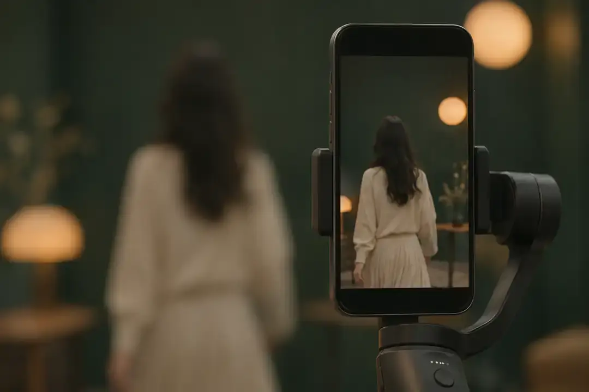
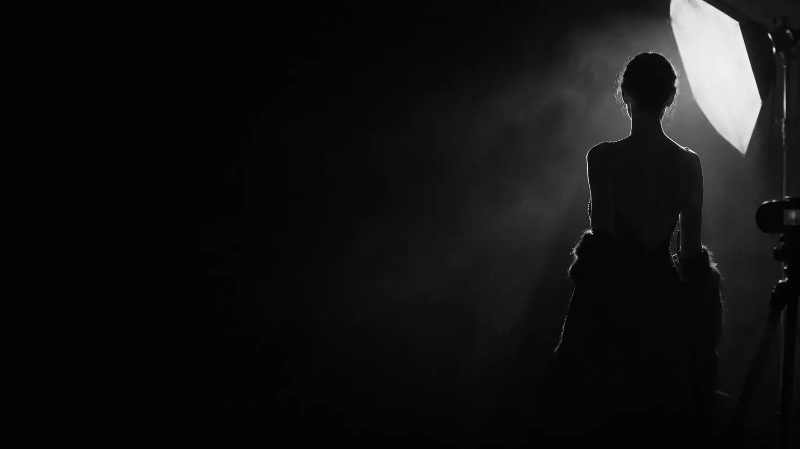
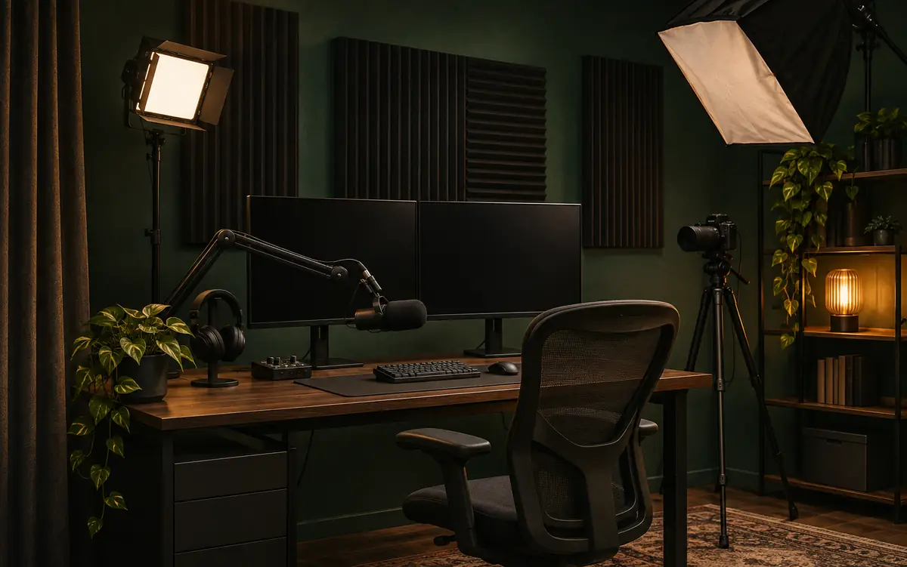
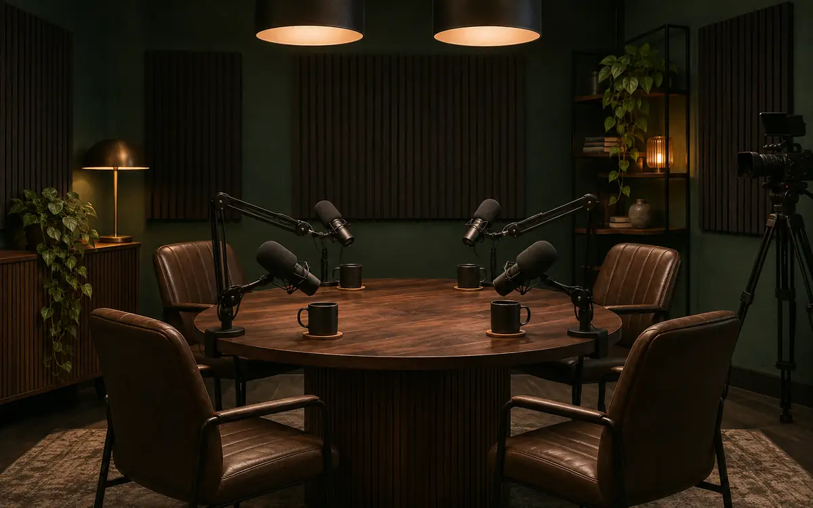
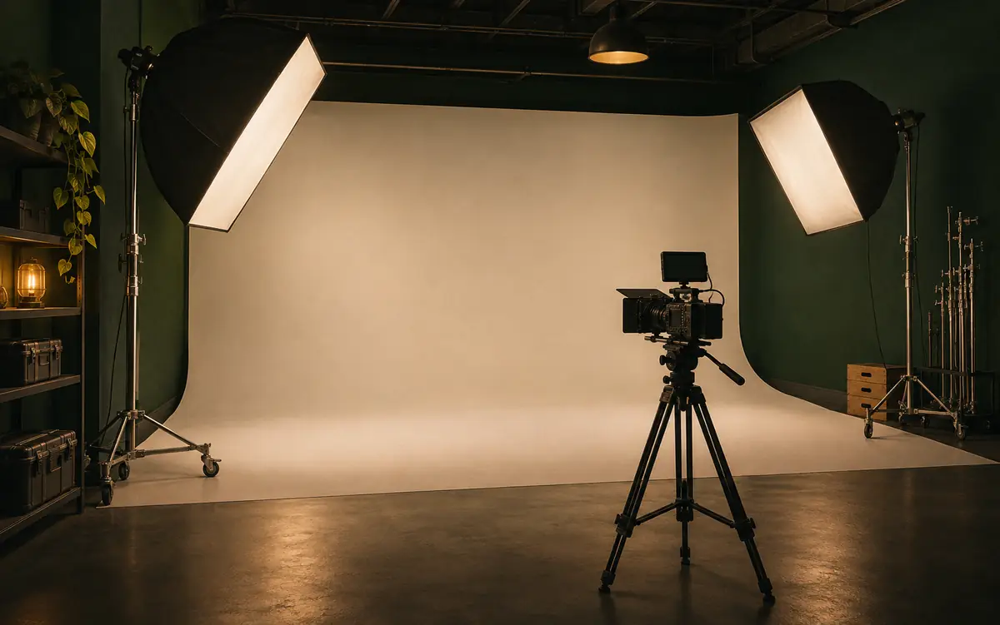

01 — STUDIO SETUP
공간을 확인하고, 목적에 맞는 스튜디오를 설계합니다.
방송과 촬영 목적, 공간의 크기와 구조를 확인한 뒤 조명·배경·장비 배치까지 고려해 최적의 스튜디오 환경을 구성합니다.
- 공간 확인
- 레이아웃 설계
- 장비 배치
- 조명 세팅
- 배경 연출
STUDIO. BROADCAST. PRODUCTION.
MEDIA, BUILT FOR YOUR VISION
ASTRA MEDIA는 스튜디오와 개인방송 환경을 목적에 맞게 구성하고, 영상·이미지·효과 콘텐츠를 기획하고 제작합니다. 필요한 공간과 장비부터 최종 결과물까지, 미디어 제작의 흐름을 함께 설계합니다.



설치 스튜디오 1 / 5 · 예시 이미지

01 — STUDIO SETUP
방송과 촬영 목적, 공간의 크기와 구조를 확인한 뒤 조명·배경·장비 배치까지 고려해 최적의 스튜디오 환경을 구성합니다.
02 — PERSONAL BROADCAST SETUP
방송 방식과 공간에 맞춰 카메라와 음향, 송출 장비와 프로그램을 구성합니다. 화면과 소리를 점검하고, 실제 방송에 필요한 기본 환경을 맞춥니다.
03 — VIDEO PRODUCTION
영상의 목적과 플랫폼에 맞춰 콘셉트와 구성을 기획하고, 촬영과 편집을 진행합니다. 브랜드 영상부터 홍보 영상과 숏폼까지 다양한 형식으로 이야기를 전달합니다.
04 — IMAGE PRODUCTION
사용 목적에 맞는 이미지와 그래픽을 기획하고 제작합니다. 채널과 방송, 캠페인에 활용할 수 있도록 콘셉트와 디자인을 조율합니다.
05 — EFFECTS PRODUCTION
방송과 영상의 콘셉트에 맞춰 시각 효과와 모션 그래픽을 제작합니다. 로고와 타이틀, 전환 화면 등에 개성을 더해 콘텐츠의 완성도를 높입니다.
PLAN
방송, 촬영, 콘텐츠의 목적과 사용 환경을 파악합니다.
DESIGN
장비 구성과 화면 연출, 콘텐츠의 콘셉트를 구체화합니다.
SETUP & CREATE
스튜디오와 개인방송 환경을 구성하거나 영상·이미지·효과를 제작합니다.
TEST & DELIVER
세팅 상태와 제작물을 점검해 실제 사용에 맞게 마무리합니다.
WE MAKE NEXT.